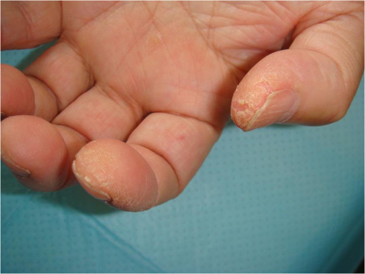

Página 2 · E3
Dona Jussara: a isca da ICC
Vinheta clínica — o desfecho se constrói nos positivos.
O caso e a isca
Dona Jussara, 50 anos, portadora de ICC, em uso habitual de digoxina, enalapril, propranolol e furosemida. Até o início do mês estava relativamente bem; passou a ter, a cada dia, mais dificuldade para subir escadas, com cansaço progressivo. A história de ICC “mal tratada” e o cansaço podem ser o mote da questão — isca.
O que o exame não mostra (e o que mostra)
Exame geral: corada, hidratada, acianótica, anictérica, eupneica em ar ambiente. Sem turgência jugular patológica; pulmões limpos; sem edema de membros inferiores; sem ritmo de galope, sem B3/B4. Não há achados de descompensação cardíaca.
Há fraqueza: pescoço (incapacidade de encostar o queixo no tórax em decúbito); proximal de MI (escadas); proximal de MS (braços acima do ombro). Há pele: descamação leve em polares/indicadores (superfície lateral) e coloração roxo-azulada em pálpebras superiores com discreto edema, sem trauma. Há nódulo mamário direito doloroso, endurecido, pouco móvel — suspeito. Interface dermato-neuromuscular + sinal de possível neoplasia.
Labs: o martelo miopático
| Painel | Valores |
|---|---|
| Hemograma / plaquetas | Leucócitos 8 mil · Ht 33% · hemácias 4 milhões · Hb 12 · plaquetas 150 mil |
| Bioquímica | Na 138 · K 3,5 · ureia 40 · creatinina 0,7 · glicemia 82 |
| Enzimas | TGO 632 · TGP 38 · CPK 1300 |
O painel “limpo” tira infecção, uremia e hipocalemia graves do centro. TGO 632 e CPK 1300 batem o martelo miopático (TGP 38 não acompanha — padrão que reforça eixo muscular, não hepatite isolada).
Por onde começar o raciocínio
Pode-se começar por TGO/CPK, pelo nódulo ou pela pele — mas, com a premissa da queixa fraqueza, o ponto de partida deve ser entender a fraqueza para montar a linha diagnóstica.
| Isca (não sustenta) | Achados que ficam |
|---|---|
| ICC no receituário + cansaço | Sem congestão (pulmões limpos, TJ ausente, sem galope/B3-B4) |
| — | Fraqueza proximal + axial (escada, braço > ombro, queixo→tórax) |
| — | Pele: pálpebras roxo-azuladas + descamação mãos |
| — | Nódulo mamário suspeito |
| — | TGO 632 · CPK 1300 |

Quiz — fixação
-
No caso de Jussara, qual achado desautoriza a hipótese principal de descompensação de ICC?
Gabarito C. a isca é o receituário; o exame não sustenta congestão.
(A)(B) alimentam a isca; (D) é demografia, não topografia. âncora no “já tem ICC” (disponibilidade).
-
Qual conjunto laboratorial mais empurra o eixo muscular neste caso?
Gabarito B. CPK e AST elevados com ALT normal são o martelo miopático do enunciado.
demais labs mostram estabilidade sistêmica, não o alvo. confusão AST = “só fígado”.